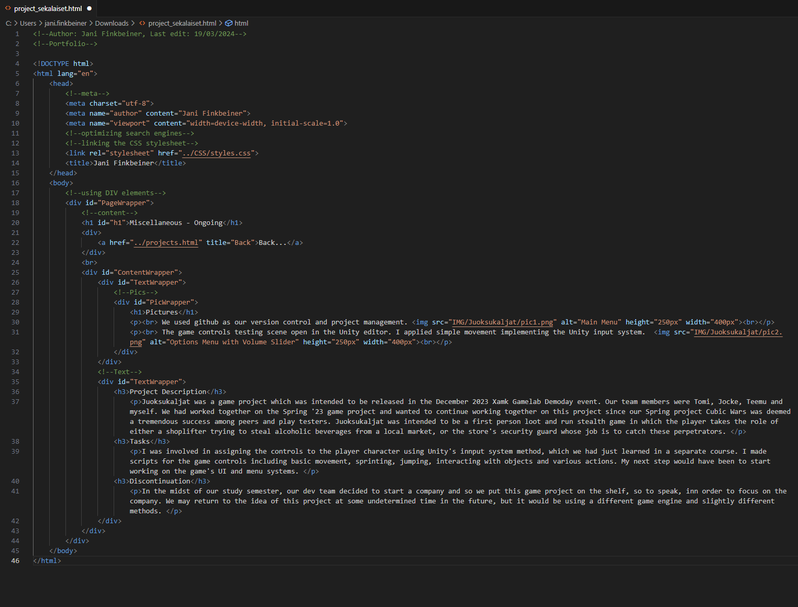

A screenshot of my html code used for this portfolio as of March 2024.

This page is used to report various small projects. These may include game jams, updating my portfolio, practice work in coding and 3d modelling, etc.
I constantly look for ways to improve my portfolio both aesthetically and contentwise. I also use time to write reports and upload them to my portfolio. Reports can be viewed by pressing the Back-button.